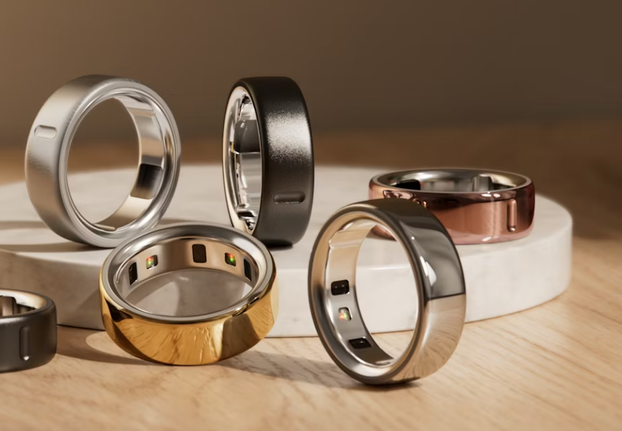
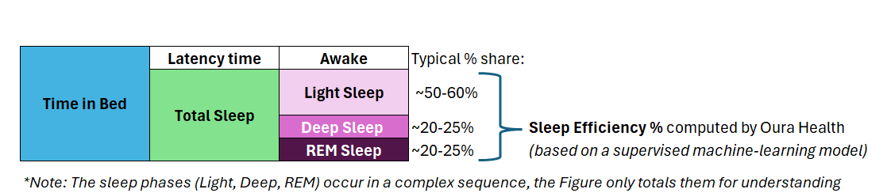
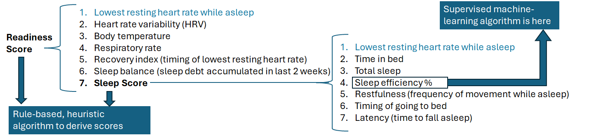
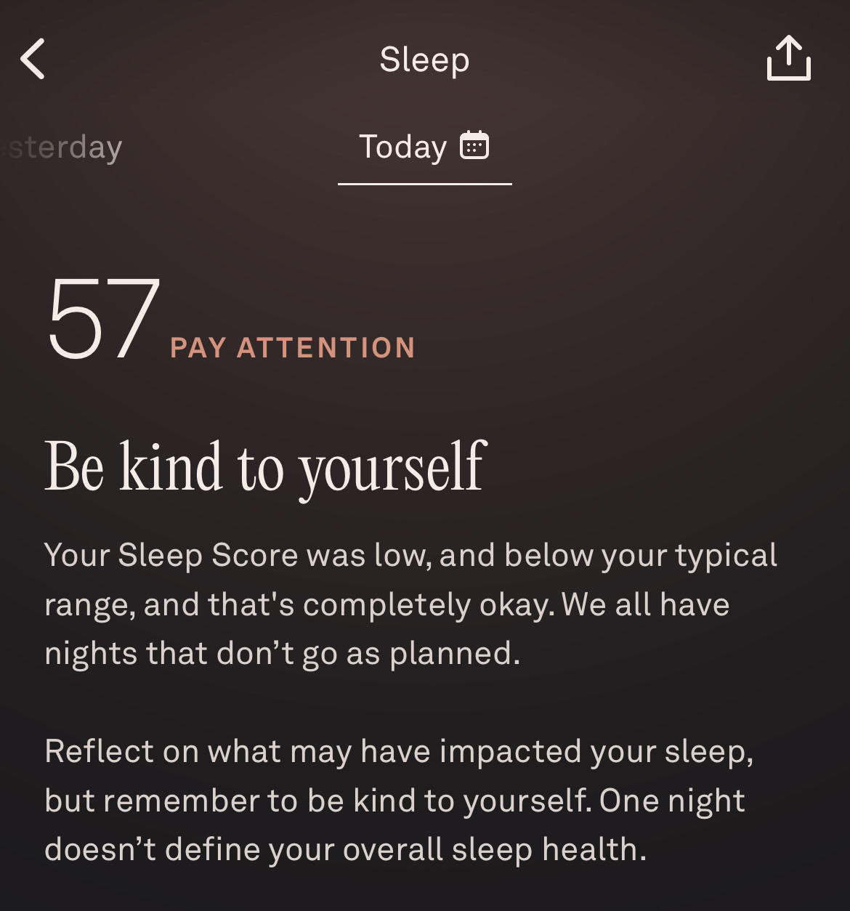
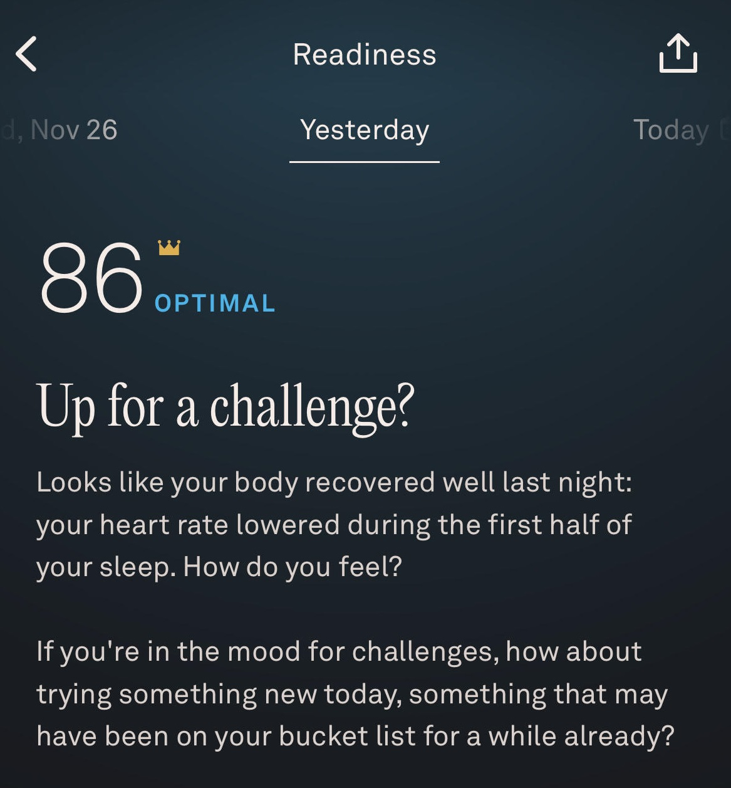
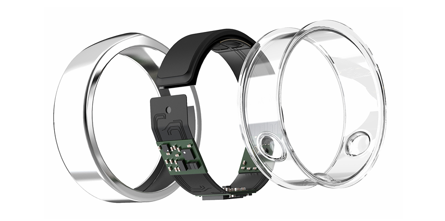

I. Background
Wearable technology for personal health information and knowledge management has gained tremendous popularity in the last 11 years1. Ever since Apple introduced its very first smartwatch in September 20142, adoption of such devices has become mainstream and at present, one in three adults in the United States has a wearable health device3 with the North American region holding the highest market share globally4. Industry reports show that in Spain, wearable health tech is also following an accelerating adoption curve with expected annual growth rate in the next 10 years of 26% (2026-2035)5.
Such devices are offered to the consumer in multiple physical forms and range from smartwatches to skin patches to rings, but in all of them, the underlying technology is built on advanced highly sensitive sensors. Almost all devices come with an accompanying digital app where the wearer can view and interact with the collected metrics and observe personal health trends in more user-friendly and knowledge-building way.
II. Introduction and History
One such wearable device is the Oura Ring by Oura Health Ltd (Image 1). Founded in 2013 in Oulu, Finland, Oura Health designs wearable ring devices, manufactured in China, to track essential biometrics and extrapolate smart scores from them using (1) a machine-learning algorithm to classify sleep stages and (2) a rule-based algorithm to integrate several other contributors together. Based on these smart scores and personal trends in the data, it offers daily lifestyle recommendations for the wearer. Thus, the Oura Ring represents an AI system according to the OECD AI principles6. The company released its first-generation product in 2015 and as of November 2025, on its fourth generation, it has sold 5.5 million rings globally7. It is currently valued at $11 bn8 with its 2025 revenues expected to double ($1 bn) over those of 2024 ($500 million).
Image 1: Oura Rings, 4th generation, in different finishes (company website)

The Oura Ring first came into media limelight during the COVID-19 pandemic in 20209. Under the threat of the rapidly spreading coronavirus, the NBA started monitoring the health of its basketball players (all of them gathered at a single tournament site in Orlando, FL) by asking them to wear Oura Rings while they sleep. The Oura Rings measured body temperature, respiratory rate, heart rate, and heart rate variability (HRV) and the readings served as early indicators if a player was developing any fever symptoms. As soon as a player had an uptick in the metrics (especially body temperature), he went into isolation so as not to infect any others. Using this protocol, the NBA teams were able to finish the season successfully. This was Oura Ring’s breakthrough moment. The same protocol was then applied in the WNBA, who were able to finish the entire 5-month season without a single COVID case10.
Thus, the Oura Ring was situated in the media narrative as health preventive smart tech, able to flag early signals for the onset of inflammations or other ailments. It carried high ethical appreciation for its valuable pre-diagnostic service and represented a win-win for everyone: the tech makers, the users, and society at large.
III. Sociotechnical dimensions
The typical user journey could be inferred from Oura’s interview with Chris Paul, an NBA point-guard11, who says that “I always check my Readiness Score when I wake up. I want to see a snapshot of how I can expect to feel that day. Then if I see something off, I like to dive in further, first to the Sleep Score, to see how well I slept the night before.”12
The computation of these two “smart scores” (the Readiness and Sleep Scores) is the expression of predictive AI, which converts biometric measurements gathered while asleep into directional conclusions about the overall wellbeing of the user. Because of this interplay between smart sensing technology, system-generated predictive scoring, and real-life medical implications for humans, who absorb and process the system’s outputs, on most occasions in the absence of expert advice, the Oura Ring creates a socio-technical environment with its own merits and risks, which will be examined in more detail in the rest of this paper.
Once a person starts wearing an Oura Ring, it first accumulates data for a period of two weeks to establish a baseline for the user and then starts presenting all metrics in relation to the user’s own baseline. Thus, the user can learn about his or her own body as a unique organism (e.g. typical resting heart rate while asleep, typical respiratory rate, etc) and then focus on deviations from those as a way to manage his or her own health, as opposed to trying to match up to measurements for the global population, which can bring more harm than good.
In this way, the Oura Ring establishes unparalleled personalization and equips the user with information, but how the user reacts to and converts this information into subsequent actions (if any) is perhaps the most unpredictable variable in this socio-technical environment.
IV. The algorithmic content for broader public understanding
Based on the initial discussion above, Oura Health’s socio-technical environment would be most vulnerable to critique from the lens of the formalism trap as the company applies formal mathematical modeling to measure well-being, which may extend far beyond any mathematical scope. To examine this, we can dive into the biological sleep process that Oura Health is converting into an AI-computed score for well-being (Figure 1).
Figure 1: Biological Sleep Process (illustration by author):

Based on this human sleep architecture, Oura Health builds the Sleep Score from 7 variables and the Sleep Score itself is then used as one of 7 variables for the Readiness Score (Figure 2). One variable – the lowest resting heart rate while asleep – is used as a contributor in the computation of both scores. Thus, the Readiness Score is a partial derivative of the Sleep Score, but the weight given to the Sleep Score depends on which “score bucket” it falls into, i.e. the contribution is uneven.
Figure 2: Composition of the Readiness and Sleep Scores (illustration by author)

The scale for both scores ranges from 0 to 100. A score over 85 is “optimal”, while a score of 100 is designed to be very rare. Based on the score received, Oura Health offers brief emphatic commentary for the user (Image 2) or suggestions on how to spend the day (Image 3). These are formulated in light language because they too can impel the user to modify his or her behavior based on conclusions from this AI algorithm. The impression is that Oura Health leaves it to each individual user to assimilate the information and rationally decide how to alter (or not) his or her day.
Image 2: Sleep Score with brief commentary by the app

Image 3: Readiness Score with brief commentary by the app

Note: real images by the author
In the trade-off between the effort to keep its app simple on the front-end but still run a computational model that evaluates human well-being in the background, Oura Health does not get into the formulaic specifics of its rule-based algorithm, which leaves the user unaware how much weight each variable carries. However, the company is more open about its machine-learning algorithm for determining the sleep stages, published in a sperate peer-reviewed paper13, which provides more transparency to the science behind the marketing. Oura Health also points out on its website that in addition to an in-house team of more than 30 Ph.D.-trained R&D staff, the company works with a Medical Advisory Board14, which serves as an independent controlling organ to ensure scientific robustness, maintain human oversight, and model human health to the extent afforded by the technology of wearable devices today.
V. The algorithmic content from technical perspective
In technical terms, the Oura Ring measures the body signals via infrared photoplethysmography (PPG), negative temperature coefficient (NTC), and a 3-D accelerometer. All sensors are located on the inside of the ring (Image 4), lying adjacent to the underside (palm side) of the finger. The device is powered by a USB charging base and is water-resistant up to 100 meters.
Image 4: Technical illustration of the Oura Ring (2nd generation)24: The ring has a titanium cover, battery, power handling circuit, double core processor, memory, two LEDs, a photosensor, temperature sensors, 3-D accelerometer, and Bluetooth connectivity to a smartphone app.

Applying a sociotechnical framework to evaluate the AI system holistically (Table 1), we can uncover additional characteristics about its profile and governance:
Table 1: System dimensions of the AI behind Oura Ring
| Dimension | Type | Details |
|---|---|---|
| Scale | Narrow | Specific purpose to track, classify, and amalgamate raw biometric data into a wellness indicator. |
| Machine Learning method | Supervised | Supervised model training and testing for sleep-stage classification performed using a Light Gradient Boosting Machine (LightGBM) classifier with a DART boosting and 500 estimators12. LightGBM typically provides high accuracy, fast training, low memory usage, and is capable of handling missing values at instances where data is of too poor quality to calculate features. Once the sleep stages are classified and the Sleep Efficiency % is calculated, Oura Health applies a rule-based algorithm to combine multiple metrics and derive a Sleep and Readiness score. |
| Function | Descriptive, Analytical, also a light Recommender | Offers descriptive statistics (in single points and in trend lines), creating an analytical profile for the user, and offers short recommendations how to spend the day from physical activity standpoint. |
| Architecture | Rule-based scoring algorithm for final well-being scores | Normalizes user data against personal baselines, applies thresholds (e.g. Sleep Latency is only rewarded if user falls asleep within an “ideal range”), applies ranges (e.g. Sleep Efficiency % contributes differently depending on which discrete scoring bins it falls into, e.g. 80-85%, 85-90%, etc), and applies fixed, pre-determined weighting for each contributor to arrive at a Sleep or Readiness Score. |
| Epistemic orientation | Social/Reflexive | Does not constitute medical advice, but makes the user learn about his or her own biological rhythm and reflect on lifestyle choices and possible changes. |
VI. Ambiguity and conflict between casual and medical use
Presented on the app’s interface in easy-to-absorb language and graphs, the smart scores and key metrics feel intuitive to the users but can lead to ambiguity because the inner workings of the body don’t always follow uniform, consistent reading. Oura Health’s AI-driven evaluations create narratives, but those narratives depend on the user’s behavioral context. Here are 3 scenarios in which there is a narrative clash between the intentions of Oura Health for its AI system and human use (which also represents the portability trap that AI models do not work for all contexts):
- Alcohol consumption: Oura Health notes in its blog that the metrics for many people on Sunday mornings are off because many users have been out till late in social contexts and have consumed alcohol. Aggregate metrics collected over 6 months from 600,000 users15, who tagged in the app that they consumed alcohol, show that the average heart rate increased by 10%, the lowest resting heart rate rose by 8%, heart rate variability (HRV) lowered by 16%, and overall sleep dropped by 35 minutes (7%). For users who are not as meticulous and don’t tag a night out with alcohol, Oura Ring’s AI will compute lower scores, which will affect their 2-week moving baselines as the algorithm does not discriminate between real-world events and may even suggest that they are falling ill, while in reality their bodies are fighting the aftermath of alcohol. It then remains an ethical choice by the users to own up the true narrative.
- HRV: Heart rate variability is a metric that hasn’t been closely utilized or embedded in cardiovascular science (only since the 2000s does more substantial body of literature exist)16. Anecdotally, it is only gaining attention now because wearable device users are asking their doctors about it17. Most doctors, such as Elijah Behr, will straight up say “Ignore it as a standalone measure … watch blood pressure, cholesterol, weight, exercise; if you are worried about your HRV, you should be worried about these.”18. However, the Oura Ring cannot measure any of these other metrics, while the users receive HRV information in isolation and can jump to unfounded worries about their health. Many doctors, including Harvard’s Medical Journal19, also question “the accuracy, reliability and overall usefulness of tracking HRV” from technological data-collection standpoint and advise “do not get too confident if you have a high HRV, or too worried if your HRV is low”, a trap that many users, being human, can easily fall into.
- Medications or physical conditions causing insomnia: There are many medications that affect human biology in a way that leads to insomnia. If a user starts taking such medications (or simply has pain and cannot sleep, such as a toothache, for example), the Oura Ring will start returning lower scores, which can dishearten the user and lead to even more aggravation and stress. In this way, the observability and realness of the declining scores by Oura can have a snow-ball psychological effect to increase the feeling of negative emotions in the users such as helplessness and frustration. Again, the algorithm is doing its job, but the results can lead to outcomes that are misaligned with the informative intent by its builders.
To counter these possible traps, Oura Health recognizes the need to implement trend reporting as a more telling narrative, so the team behind the app has created user views that put every metric on a trendline. Thus, the company is trying to push “responsible tech” to enable users to seek qualified medical advice primarily when they see a persisting deviation in the trendline.
VI. Responsible AI evaluation
As we have seen, the human dimension in this sociotechnical environment is a critical factor because humans can misinterpret the well-being smart scores and convert Oura’s outputs into health risks for themselves. But from technological standpoint, the AI system scores very well in its Responsible AI profile (Table 2).
Table 2: Responsible AI profile for Oura Ring and its computational scoring for well-being
| Dimension | Rating | Details for chosen rating |
|---|---|---|
| Interpretability | High | The algorithmic score is understood on global level by examining the recorded measurements for the key metrics and isolating deviations. |
| Fairness | High | Provides equality and equity for the users because the outputs of the AI system lack discrimination or unethical treatment. |
| Privacy | High | Safeguards user identity20; does not sell or rent user data; user data not shared with anyone unless the user requests the data to be sent to an external data recipient; user data aggregated as totals in 1st party studies. |
| Security | High | Strong, industry-standard security policy and features21. No history of any data security breaches. |
| Resilience | High | Adaptable to special needs. Oura Health recognized that women’s metrics swing during certain periods so they rolled out special features for women – Cycle Insights (for period prediction, fertile window, and more) and Pregnancy Insights22. As a result, as of 2024, 59% of Oura’s users are women. |
| Bias | Low to moderate | For its sleep staging algorithm, Oura Health publishes the training set profile and publicly informs that the set is derived from different climate environments (Singapore, Finland, and the USA) and from 118 people with different skin tones, body compositions (BMI), behavioral habits (such as eating times before going to bed), ages (15 to 73), and healthy condition13. Thus, we can assume “low to moderate” bias for the sleep stage algorithm because the diversity of the set is robust but may still underrepresent certain demographic cases or health conditions. Key biometric thresholds for the other metrics (heart rate, respiration rate, etc.) are based on total population accepted medical norms. |
| Accuracy | Moderate to high | Achieves 79% agreement with a polysomnography (PSG) sleep lab test23 for measuring sleep stages (highest % among sleep wearable devices, specifically Fitbit and Apple Watch); Other biometrics (such as heart rate, body temperature) deemed accurate because of advanced sensor technology, but doubt remains about HRV. |
| Reliability | Moderate to high | On some occasions while the user is asleep, the ring can slip or stop recording metrics for some time due to physical movement. |
| Transparency | Moderate | Published peer-reviewed white paper13 available to the public on the scientific construct of the ring and the accuracy of the machine learning algorithm. The profile of its training set is also published. However, the rule-based algorithm for the computation of the smart scores for well-being remains an IP secret. |
| Explainability | Low | Information is provided neither about the weight of each key metric in the rule-based computation of the smart scores, nor about the upper and lower limits of the “buckets” their values go into, so it remains unknown how much each specific key metric influences the final scores. Most likely withheld as IP protection. |
| Accountability | Not applicable | Does not carry accountability for the health choices by consumers. |
A noteworthy callout from the above evaluation is that Interpretability is high, while Explainability is low. One supposition for this is that Oura Health deliberately withholds its proprietary rule-based algorithm used for the computation of the two well-being smart scores to protect its IP, while assuring the users that the methodology is reviewed and approved by a Medical Advisory Board.
VII. Conclusion
In sum, Oura Health has an innovative product, based on machine learning and rule-based algorithms, to equip people with biological knowledge about the self. It exhibits high ratings from Responsible AI lens and even if there are doubts on the accuracy of some of the biometric measurements, the product remains useful because it focuses on deviations from the user’s typical baseline. The exact rule-based algorithm is not revealed but Oura Health maintains the trust of its users through its external governance approach via the Medical Advisory Board and robust data privacy and security policies. From business perspective, the app is very well-developed, providing rich information and different views for data exploration, but in this sociotechnical environment, the human behavior, interpretation, and reaction carry the highest risk for any harmful consequences.
1 Editorial, "The Growing Popularity of Wearable Technology", The Magazine World, February 20, 2025.
2 Press release, "Apple Unveils Apple Watch—Apple’s Most Personal Device Ever", Apple Newsroom, September 9, 2014.
3 Press release, "Study reveals wearable device trends among U.S. adults", The National Heart, Lung, and Blood Institute (NHLBI), June 15, 2023.
4 Dey, Maitrayee, "Wearable Technology Statistics By Market, Consumers And Region", ElectroIQ Research, September 18, 2025.
5 Dhapte, Aarte, "Spain Wearable Technology Market", Market Research Future, October, 2025.
6 Russell, Stuart; Perset, Karine; Grobelnik, Marko, "Updates to the OECD’s definition of an AI system explained", OECD Blog, November 29, 2023.
7 Company website, "About Us", Oura Health, November 2025.
8 McCaskill, Steve, "Smart ring firm Oura achieves US$11bn valuation as it raises fresh funds", SportsPro Magazine, October 15, 2023.
9 Pickman, Ben, "NBA restart: Why the Oura ring is key to finishing the season", Sports Illustrated, July 1, 2025.
10 News team, "The WNBA And Oura Celebrate A Covid-Free Season", The Pulse Blog by Oura Health, January 8, 2021.
11 Chris Paul is an NBA point-guard, who has won multiple awards such as the All-Star Most Valuable Player, Rookie of the Year, and two Olympic Gold Medals, among other achievements
12 News team, "The Oura Q&A: NBA All-Star Chris Paul", The Pulse Blog by Oura Health, October 4, 2025.
13 Altini, Marco, and Kinnunen, Hannu, "The Promise of Sleep: A Multi-Sensor Approach for Accurate Sleep Stage Detection Using the Oura Ring", Sensors (Journal), 23 June 2021.
14 Company website, "Meet Oura's Medical Advisors", Oura Health, November 2025.
15 News team, "Oura Data Reveals the True Impact of Alcohol on Sleep", The Pulse Blog by Oura Health, November 4, 2025.
16 Sundas, Amina; Contreras, Ivan; Navarro-Otano, Judith; Soler Julia; Beneyto, Aleix; Vehi, Josep, "Heart rate variability over the decades: a scoping review", National Library of Medicine, 2025.
17 Sager, Jessica, in interview with several M.D.s, "Downsides of Heart Rate Variability, Cardiologists Say", Parade Magazine, June 19, 2025.
18 Theimer, Sharon, in interview with Elijah Behr, M.D., "Your wearable says your heart rate variability has changed. Now what?", Mayo Clinic News Network, July 30, 2024.
19 Harvard Health Publishing Staff, "Heart rate variability: How it might indicate well-being", Harvard Health Publishing – Harvard Medical School, April 3, 2024.
20 Company policy, "Oura Ring Privacy Policy", Oura Health, April 21, 2025.
21 Company policy, "Oura Ring Data Protection and Trust", Oura Health, May 28, 2025.
22 News team, "Cycle Insights: Know Your Cycle Phases, Fertile Window, Period Prediction, and More", The Pulse Blog by Oura Health, November 21, 2025.
23 Company statement, "Inside the Ring: Developing Oura’s Latest Sleep Staging Algorithm", The Pulse Blog by Oura Health, May 30, 2023.